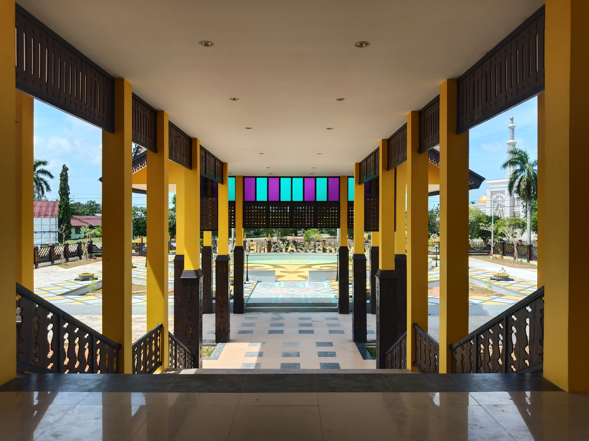

Rumah Budaya Melayu

Bangunan Depan
Bangunan Depan Rumah Budaya Melayu

Bangunan Depan dan Halaman
Bangunan depan dan Halaman

Tangga
Tempat untuk naik lantai dua

Bagian Kanan
Bagian kanan dan terdapat tangga untuk naik ke lantai dua

Bagian Kiri
Bagian kiri dan terdapat tangga untuk naik ke lantai dua

Bagian Depan
Bagian depan dan ikon tulisan Rumah Budaya Melayu
Bagian Belakang Tingkat Dua
Bagian belakang pada tingkat dua Rumah Budaya Melayu
Previous
Next
Destinasi Budaya - Klik foto untuk melihat foto yang lainnya.(Klik bagian kanan atau kiri foto)
Rumah Budaya Melayu Mempawah terletak di Jalan Raden Kusno, Terusan, Kecamatan Mempawah Hilir, Kabupaten Mempawah, Provinsi Kalimantan Barat. Bangunan Bangunan ini memadukan antara konsep modern dan tradisional. Dikatakan modern karena menggunakan beton dan lantai dari keramik, sedangkan biasanya rumah melayu identik menggunakan materil dari kayu, baik dari segi tiang, tangga, lantai dan lain-lainnya. Arsitektur bangunan ini memiliki corak dan ciri khas Melayu sebagai bukti keberagaman budaya bangsa, khususnya Melayu. Perpaduan antara warna kuning dan coklat pada bangunan memberikan kesan estetika yang elegan. Penggunaan warna kuning ini tentu saja tidak terlepas dari kepercayaan masyarakat Melayu bahwa warna tersebut melambangkan kesucian.
Seperti rumah Melayu lainnya, Rumah Budaya Melayu Mempawah juga berbentuk rumah panggung. Dimana bangunan ini ditopang oleh tiang-tiang dengan ketinggian yang mencapai satu meter lebih. Pada atap bagian bangunan depan (selasar) terlihat corak ragam hias yang sama dengan bagian bangunan di Istana Amantubillah. Diatas atap terdapat tonggak yang lurus dan ukiran kayu yang berupa motif pusuk tanaman dan gelombang. Dibawah atap (dibawah lisplang) juga terdapat tida tiang gantung dan ukiran kayu bermotif tanaman. Selain itu, dibagian depan selasar juga terdapat dua buah bintang segi delapan, yang bentuknya mirip roda kemudi kapal.
Rumah Budaya Melayu Mempawah akan dilengkapi dengan area wisata kuliner dan perpustakaan agama. Lokasinya Bangunan ini berseberangan dengan Masjid Agung Alfalah, pastinya hal tersebut sangat mendukung dan dibutuhkan. Pengunjung yang mampir untuk menunaikan ibadah, bisa sekaligus untuk bersantap kuliner atau menambah wawasan.